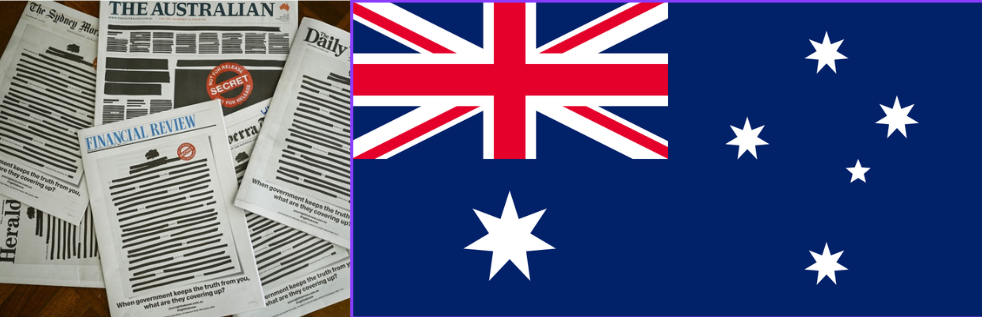

How Australia's newspapers grew with every wave of settlement, peaked around the First World War, then closed faster than they opened — and why what we can read online today is only part of the story.

The first paper, Sydney's Gazette, appeared in 1803. For decades the colonies printed only a few thousand articles a year. Then people arrived, and the presses followed.
Trove holds 81,624 articles for 1850, 637,508 for 1880 and 2.6 million for 1900. Victoria's yearly total grew from about 19,000 articles in 1851 to almost 75,000 in 1859, in the first years of its gold rush. Western Australia's own gold rush shows up in the 1890s, when its yearly total rose from 114,000 (1895) to 359,000 (1898).
Launches peaked in the 1890s, when 247 new titles appeared. The 1910s look even bigger (307), but look at the grey bars. 86 of those are Victorian local papers that Trove holds only for the years 1914–1918. They are slices of papers that ran for longer, not new launches or closures, so they make the 1910s look busier than they were.
Set the grey bars aside and a clearer pattern remains. From the 1920s more titles close than open: a net loss of 32 in the 1920s, 38 in the 1930s and 47 in the 1940s.
Titles that ended in the 1950s are left out: Trove stops digitising most papers around 1954, so those end dates are partly an artefact of the collection.
The same bulge shows up in the article counts of Chapter 1. Victoria's yearly total jumps from 766,000 articles in 1913 to 1.28 million in 1914, then drops to 509,000 by 1919, which is why Trove's national count appears to “peak” at 4.8 million in 1915. In fact the 1920s and 1930s are just as high (4.7 million in 1929). The honest reading is a long plateau from about 1914 to 1939, followed by a decline.
A few titles survived for a century or more. Echuca's Riverine Herald was printed for 134 years (1869–2002), and Sydney's French-language Le Courrier Australien for 120. The big-city dailies — The Sydney Morning Herald, The Argus, The Age — anchor the list, along with country papers like the Border Watch in Mount Gambier.
Before 1860, three in four titles started in a capital city (158 of the 210 that we can place on a map). From 1860 to 1899 the pattern flips: 77% of new titles started in a regional town, as the goldfields, farming districts and railways created new communities that wanted their own paper.
One dot per title, grouped by starting era
Only 210 titles can be placed on a map. Sydney (62) and Hobart (46) lead the way.
605 titles. New South Wales (194) and Victoria (164) lead. Western Australia adds 94, helped by its 1890s gold rush.
886 titles, the most of any era. Western Australia now leads with 274, ahead of New South Wales (249).
Type of place: Capital city Regional town
Each circle is a town. Bigger circles mean more newspapers in print there during the years you chose. Use the Zoom to menu to look closely at Melbourne, Sydney, Adelaide, Perth and the goldfields, or the Queensland coast.
The maps count a title if
it was in print at any time in the chosen years.
Titles in print
Shading shows the number of titles in each state. States with no titles in print are grey.
The country is divided into squares 200 km wide, all the same size. The darkest squares are the Sydney, Melbourne and Perth regions.
All the maps on this page use the Albers equal-area projection, which keeps every state and square true to size so that shading and dot density compare fairly. The usual web-map projection, Mercator, stretches areas towards the poles.
Sydney printed the most titles (174), followed by Perth (99), Melbourne (76), Hobart (70) and Adelaide (64). Western Australia punches above its weight. Its gold rushes of the 1890s helped it climb from 6th in 1870 to 2nd in 1930 in the number of papers in print, ahead of Victoria and South Australia. Six of the 15 towns with the most titles are in Western Australia: Perth, Fremantle, Geraldton, Coolgardie, Kalgoorlie and Bunbury.
Victoria and New South Wales swapped first place until 1890. From 1900, New South Wales stays on top. Tasmania, second in 1850, was last by 1880. South Australia ranked third from 1850 to 1890, and Queensland fourth from 1870 to 1890.
Indexing each state to its own 1929 total makes the decline easy to compare. Across Australia, preserved articles dipped to 88.5 in 1931, the Depression, then fell to 54.4 in 1943, the lowest point of the war.
South Australia (37.0) and Queensland (37.6) fell furthest by 1943, while New South Wales held up best (69.9). Victoria, which had the big 1914–1918 bulge, sits in the middle (50.4).
Read this carefully: the fall combines real closures with the way Trove has chosen which papers and years to digitise. New South Wales, Victoria and Western Australia dominate because that is what Trove holds; the Northern Territory and the ACT barely appear.
Between 1900 and 1930 the balance moved west. Western Australia more than doubled its titles in print (41 to 91), while Victoria fell from 110 to 65.
About 69% of the articles in Trove are news stories and similar articles. Around 19% are advertisements, 11% are lists, results and guides, and about 1% are family notices: births, marriages and deaths that make Trove a treasure for family historians.
Readers have also improved the record. Volunteers have corrected the machine-read text of about 16 million articles, roughly 6.5% of the total.
The record is not only in English. In this list, 39 titles that began by 1954 were printed partly or wholly in 13 languages, led by German, Italian and Chinese. The German-language press goes back to 1848, and the Chinese-language press to the gold rushes of the 1850s.
This counts papers in which at least a fifth of the text was detected as another language. It covers only the titles in this dataset, and language detection on OCR text can be wrong.
Trove has 3.7 million articles for 1954 and only 436,000 for 1955, a drop of 88%. This is not newspapers vanishing: it is the line where copyright and permission limit what the library could digitise. Everything on this page should be read with that in mind.
The record is still growing. Trove added between 117 and 322 newspaper titles to its list every year from 2011 to 2021, peaking at 322 in 2013. What looks like “the history of the press” keeps changing as more papers are digitised.